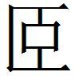
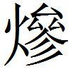
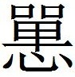

齊一
鮑本 齊：東有菑川、東萊、瑯邪、高密、膠東；南有泰山、城陽；北有千乘、清河以南勃海之高樂、高城、重合、信陽；西有濟南、平原。
楚威王戰勝於徐州
楚威王〔一〕 戰勝於徐州〔二〕 ，欲逐嬰子〔三〕 於齊〔四〕 。嬰子恐，張丑〔五〕 謂楚王曰：「王戰勝於徐州也，盼子〔六〕 不用也。盼子有功於國〔七〕 ，百姓為之用。嬰子不善〔八〕 ，而用申縳〔九〕 。申縳者，大臣與〔一〇〕 百姓弗為用〔一一〕 ，故王勝之也。今嬰子逐〔一二〕 ，盼子必用。復整其士卒以與王遇，必不便〔一三〕 於王也。」楚王因弗逐〔一四〕 。
〔一〕 姚本 威王，楚元王之子，懷王之父也。
〔二〕 姚本 徐州，或作舒州，是時屬齊。鮑本 「徐」作「俆」，下同。後志 ，魯之薛，六國時曰俆州，事在楚威七年，此十年。補曰：俆，詞余反。正義 云，紀年 梁惠王三十年，下邳遷于薛，改名俆州。「俆」，左氏 作「舒」，說文 作「䣄」。札记 丕烈案：史記 作「徐」，俆州是也，多誤為「徐」者。正義 在孟嘗君列傳 。
〔三〕 姚本 嬰子，田嬰也，號為靖郭君，而封於薛也。
〔四〕 鮑本 逐，使齊逐之。田嬰時未封，故曰嬰子，猶盼子。
〔五〕 姚本 張丑，齊臣也。鮑本 齊人。正曰：丑又見韓、魏、燕、中山等策 。
〔六〕 姚本 盼子，田盼子也。
〔七〕 姚本 一「國」下有「而」字。
〔八〕 鮑本 不與盼善。
〔九〕 姚本 史記 作申紀。嬰子不善盼子，故不用之而用申縳。鮑本 「縳」作「縛」。
〔一〇〕 姚本 一本作「弗與」。鮑本 「與」上有「弗」字。札记 丕烈案：史記 作「大臣不附」。
〔一一〕 姚本 言大臣與百姓不為申縳致力盡用也。
〔一二〕 姚本 「逐子」，曾本，「今王逐嬰子矣」。
〔一三〕 姚本 遇，敵也。便，利也。
〔一四〕 姚本 弗逐田嬰。鮑本 楚記 七年有。
齊將封田嬰於薛
齊將封田嬰於薛〔一〕 。楚王〔二〕 聞之，大怒，將伐齊。齊王有輟〔三〕 志。公孫閈〔四〕 曰：「封之成與不，非在齊也，又將在楚。閈說楚王，令其欲封公也又甚於齊〔五〕 。」嬰子曰：「願委之於子〔六〕 。」
〔一〕 鮑本 定封在此三年。正曰：宣王二十年。又說見後。補曰：索隱 云，嬰，諸田之別子，非宣王弟也。
〔二〕 鮑本 懷。
〔三〕 姚本 輟，止也。
〔四〕 姚本 公孫閈，齊之公孫田氏也。
〔五〕 姚本 公，謂田嬰也。使楚王欲封公甚於齊之欲封公也。
〔六〕 姚本 委，付也。子，公孫閈也。
公孫閈為〔一〕 謂楚王曰：「魯、宋事楚而齊不事者，齊大而魯、宋小。王獨利魯、宋之小，不惡齊大何也？夫齊〔二〕 削〔三〕 地而封田嬰，是其所以弱〔四〕 也。願勿止〔五〕 。」楚王曰〔六〕 ：「善。」因不止〔七〕 。
〔一〕 姚本 劉無「為」字。
〔二〕 鮑本 「齊」下有「之」字。
〔三〕 姚本 削，分。
〔四〕 姚本 弱，小也。
〔五〕 姚本 齊分薛以封田嬰，則所以使齊小，故曰「勿止」。
〔六〕 札记 今本脫「曰」字。
〔七〕 姚本 不復止齊封田嬰。鮑本 彪謂：此說不可行也。嬰，齊相也，雖得薛，不決裂於外，猶齊地耳。齊、薛為一，如穰侯、應侯之於秦也，何弱小乎其初哉！正曰：史 ，齊襄王立，而孟嘗君中立為諸侯。王畏君，與連和。後卒，諸子爭立，齊、魏共滅之。鮑謂分封不足以弱齊，未睹末流之害也。
靖郭君將城薛
靖郭君〔一〕 將城薛，客多以諫〔二〕 。靖郭君謂謁者，旡為客通〔三〕 。齊人有請者曰：「臣請三言而已矣！益一言，臣請烹〔四〕 。」靖郭君因見之。客趨而進曰：「海大魚。」因反走〔五〕 。君曰：「客有於此〔六〕 。」客曰：「鄙臣不敢以死為戲〔七〕 。」君曰：「亡〔八〕 ，更言之。」對曰：「君不聞大魚乎？網不能止〔九〕 ，鉤不能牽〔一〇〕 ，蕩而失水〔一一〕 ，則螻蟻得意焉〔一二〕 。今夫齊，亦君之水也。君長〔一三〕 有齊陰〔一四〕 ，奚〔一五〕 以薛為？夫齊〔一六〕 ，雖隆薛之城到於天，猶之無益也〔一七〕 。」君曰：「善。」乃輟〔一八〕 城薛。
〔一〕 鮑本 田嬰謚。正曰：此據史 文。索隱 云，靖郭或封邑號，漢齊王舅父駟鈞，封靖郭侯。
〔二〕 姚本 諫，止之也。
〔三〕 姚本 無通欲諫者也。
〔四〕 姚本 已，止也。益，猶過也。過言請烹。烹，煮，謂死。鮑本 所謂鼎鑊之誅。
〔五〕 姚本 反，還。
〔六〕 姚本 於此，止無走也。鮑本 言此，言外應復有。
〔七〕 姚本續 ：淮南子 ，「戲」作「熙」。
〔八〕 姚本 亡，無。鮑本 亡，無同。言無此也。
〔九〕 姚本 止，禁。
〔一〇〕 姚本 牽，引。續：韓非子 ，「繳不能絆」。
〔一一〕 鮑本 集韻 ，蕩，放也。言自放肆。
〔一二〕 姚本 得意者，飽滿也。鮑本 螻，螻蛄，一曰螜，天螻。得意，飫飽也。
〔一三〕 鮑本 雄長之長。正曰：見下。
〔一四〕 姚本 別本無「陰」字。鮑本 無「有」字、「陰」字。正曰：一本「君長有齊」。札记 丕烈案：韓子 作「君長有齊」，新序 作「君已有齊」，與策 文不同。此有者，當讀「陰」為「蔭」。
〔一五〕 姚本 奚，何。
〔一六〕 鮑本 正曰：姚氏「奚以薛為夫齊」句，按新序 作「無齊雖隆」云云，是蓋「夫」、「無」音訛，又因上「夫齊」字混。札记 丕烈案：吳說非也，「夫」乃「失」字形近之訛。韓子 作「君失齊」。淮南·人間訓 亦同。
〔一七〕 姚本 隆，高也。到，至也。高薛城至於天，猶無益也。
〔一八〕 姚本 輟，止。
靖郭君謂齊王
靖郭君謂齊王〔一〕 曰：「五官之計〔二〕 ，不可不日聽〔三〕 也而數覽〔四〕 。」王曰：「說五而厭之〔五〕 。」今〔六〕 與靖郭君〔七〕 。
〔一〕 姚本 齊王，威王也，宣王之父。
〔二〕 姚本 計，簿書也。鮑本 曲禮 ，司徒、司空、司馬、司士、司寇，典司五眾，計其事之凡也。正曰：注家謂此，殷制，非策所指。按記·曾子問 ，諸侯出，命國家五官而後行。注云，五官，五大夫典事者。
〔三〕 姚本 聽，治也。
〔四〕 姚本 覽，視。鮑本 正曰：「也」字當在「覽」下。
〔五〕 姚本 一本作「王曰：『日說五官吾厭之。』」鮑本「五」作「吾」言汝既說我，則不得自厭，故以委之。正曰：「王曰說吾」有缺誤。通鑑 云，「不可不日聽而數覽也。王從之，已而厭之，悉以委嬰。嬰由是得專齊權」。
〔六〕 姚本 「今」，一作「令」。
〔七〕 姚本 與靖郭君，使聽治也。鮑本 以五官之計委之。
靖郭君善齊貌辨
靖郭君善齊貌辨〔一〕 。齊貌辨之為人也多疵〔二〕 ，門人弗說。士尉〔三〕 以証〔四〕 靖郭君，靖郭君不聽〔五〕 ，士尉辭而去。孟嘗君〔六〕 又竊〔七〕 以諫，靖郭君大怒曰：「剗而類，破吾家。〔八〕 苟可慊齊貌辨者，吾無辭為之〔九〕 。」於是舍之上舍〔一〇〕 ，令長子御〔一一〕 ，旦暮〔一二〕 進食。
〔一〕 姚本續 ：昆辯。古今人表 作昆辯。師古曰，齊人也，靖郭君所善，見戰國策 。而呂覽 作劇貌辯。元和姓纂 ，昆，夏諸侯昆吾氏之後，齊有昆弁，見戰國策 。鮑本 齊人。補曰：按一本標云，修文御覽 、北堂書鈔 同。札记 丕烈案：今在太平御覽 三百六十八卷，作「昆辨」。吳引姚校，而以此十四字自注於古今人表 下，謂其同作「昆」也。今刻本誤入正文，吳本注中有注，刻時多誤混，讀者每不察，附著於此。
〔二〕 姚本 疵，闕病也。續：「疵」作「訾」，見呂覽 。鮑本 疵，病也，謂過失。補曰：此人蓋有奇節而不修細行者。
〔三〕 鮑本 齊人。
〔四〕 姚本 証，諫也。
〔五〕 姚本 聽，受。
〔六〕 姚本 孟嘗君，田嬰子田文也，號孟嘗君。鮑本 嬰子文。補曰：孟子 ，嘗，邑名，在薛旁。按詩 「居常與許」，即此嘗也。
〔七〕 鮑本 竊，猶私。
〔八〕 姚本 剗，滅也。而，汝也。言汝破吾家。續：呂覽 「揆吾家」，高誘注云，揆度吾家，試可以足齊貌辨者，吾不辭也。鮑本 集韻 ，剗，翦也。以翦草為喻。而，汝也。類，族類。
〔九〕 姚本 慊，猶善也。善齊貌辨者，吾不辭為之。鮑本 集韻 ，慊，愜也。言有可滿貌辨之意，雖家族破滅，猶為之不辭也。
〔一〇〕 姚本 上舍，上傳也。一曰甲第也。鮑本 猶甲第。正曰：此本高注。按田文傳 「傳舍、幸舍、代舍」，索隱 云，並當上、中、下三等之客所舍之名。以此推之，則代舍乃上舍也。
〔一一〕 姚本 御，侍也。鮑本 「御」下有「之」字。集韻 ，御，侍也。正曰：為之御也。札记 丕烈案：呂氏春秋 無。
〔一二〕 姚本 旦暮，朝夕也。
數年，威王薨，宣王〔一〕 立。靖郭君之交，大不善於宣王〔二〕 ，辭而之薛，與齊貌辨俱留。無幾何〔三〕 ，齊貌辨辭而行〔四〕 ，請見宣王。靖郭君曰：「王之不說嬰甚，公往必得死焉。」齊貌辨曰：「固〔五〕 不求生也，請必行。」靖郭君不能止。
〔一〕 姚本 宣王，孟軻所見以羊易亹鍾之牛者也。鮑本 「威王」作「宣王」，「宣王」作「閔王」，下同。嬰之封薛在閔王初。下言之薛，則此不得言宣王立也。正曰：說見下。札记 丕烈案：呂氏春秋 作「威」、「宣」。
〔二〕 姚本 宣王不善之也。
〔三〕 姚本 貌辨、靖郭君俱止於薛，無幾何。
〔四〕 姚本 行，去也；去至齊也。
〔五〕 姚本 固，必。
齊貌辨行至齊，宣王聞之，藏〔一〕 怒以待之。齊貌辨見宣王，王曰：「子〔二〕 ，靖郭君之所聽愛夫〔三〕 ！」齊貌辨曰：「愛則有之，聽則無有。王之方為太子之時，辨謂靖郭君曰：『太子相不仁，過頤豕視〔四〕 ，若是者信反〔五〕 。不若廢太子，更立衛姬嬰兒郊師〔六〕 。』靖郭君泣而曰：『不可，吾不忍也。』若聽辨而為之，必無今日之患也〔七〕 。此為一。至於薛，昭陽〔八〕 請以數倍之地易薛，辨又曰：『必聽之〔九〕 。』靖郭君曰：『受薛於先王〔一〇〕 ，雖惡於後王〔一一〕 ，吾獨謂〔一二〕 先王何乎〔一三〕 ！且先王之廟在薛〔一四〕 ，吾豈可以先王之廟與楚乎！』又不肯聽辨。此為二〔一五〕 。」宣王大息〔一六〕 ，動〔一七〕 於顏色，曰：「靖郭君之於寡人一至此乎！寡人少，殊不知此〔一八〕 。客肯為寡人來靖郭君乎〔一九〕 ？」齊貌辨對曰：「敬諾〔二〇〕 。」
〔一〕 姚本 藏，懷。
〔二〕 鮑本 「王」字不重，「曰子」作「子曰」。補曰：當作「曰子」札记 丕烈案：「王」字不重，是也。呂氏春秋 不重，太平御覽 引此亦不重。
〔三〕 姚本 夫，辭。鮑本 愛而聽用其言。
〔四〕 鮑本 過，謂豊頤過人。豕多反視。補曰：呂氏春秋 「過頤豕視」注，頤豕，不仁之人，其說未詳。劉辰翁云，「過頤」，即俗所謂耳後見腮；「豕視」，即相法所謂下邪偷視。札记 丕烈案：吳氏讀呂氏春秋 ，誤也。高彼注云，「過，甚也。太子不仁甚於頤豕，視如此者倍反，不循道理也」。讀「豕」句絕，「視」下屬。此文亦當同。
〔五〕 姚本 反，叛。鮑本 始信後反。札记 「信」即「倍」字偽。太平御覽 引此作「背」，是其證也。
〔六〕 姚本 郊師，衛姬之子，宣王庶弟。
〔七〕 姚本 患，謂不見善，出走薛也。
〔八〕 姚本 昭陽，楚將。
〔九〕 姚本 聽與楚易地也。
〔一〇〕 姚本 先君王也。鮑本 封嬰於薛，閔王也。而曰「受於先王」，蓋宣王有旨封之。正曰：史 以田嬰之封在湣王三年，從通鑑 則在宣王二十二年。按，嬰自威王時任職用事，而文之言曰，「君用事相齊至今三王矣」。三王者，威、宣、閔也。故大事記 以嬰卒文立，附見於閔王元年。此策 曰，「受薛於先王」，「先王之廟在薛」，則是威王之世，嬰已受封，史 亦不合。索隱 引紀年 ，梁惠後元十三年四月，齊威王封田嬰於薛，十月齊城薛，十四年薛子嬰來朝，十五年齊威王薨。考之史 ，梁惠王後元十三年，在今封嬰前一年，不得為威王之世，亦皆不合，惟梁惠前十三年則正當威王時。疑此處有差互，而嬰之封薛，則實威王之世也。
〔一一〕 姚本 言為後王（劉無此四字）。言為後王小惡。
〔一二〕 姚本 謂，猶柰何也。
〔一三〕 鮑本 「何」下無「乎」字。言無以告於先王。札记 丕烈案：呂氏春秋 有。
〔一四〕 姚本 起威王之廟在薛。
〔一五〕 姚本 二不聽辨也。
〔一六〕 鮑本 長出氣也。
〔一七〕 姚本 動，猶發也。
〔一八〕 姚本 少，小也。殊不知也。
〔一九〕 姚本 肯，猶可也。能為寡人致靖郭君身來不乎也。
〔二〇〕 姚本 一曰「必能使靖郭君來」。
靖郭君〔一〕 衣威王之衣，冠舞〔二〕 其劍〔三〕 ，宣王自迎靖郭君於郊，望之而泣。靖郭君至，因請相之〔四〕 。靖郭君辭，不得已而受〔五〕 。七日，謝病強辭〔六〕 。靖郭君辭〔七〕 不得，三日而聽〔八〕 。
〔一〕 姚本 從薛至齊也。
〔二〕 姚本 「舞」，劉作「帶」。
〔三〕 鮑本 先時所賜。
〔四〕 姚本 請以為相也。
〔五〕 姚本 受相印也。鮑本 「受」下有「之」字。札记 丕烈案：呂氏春秋 無。
〔六〕 姚本 以病謝相位。強，猶固。
〔七〕 鮑本 無「靖郭君辭」四字。札记 丕烈案：呂氏春秋 無「靖郭君辭不得」六字，為是。
〔八〕 鮑本 王聽其辭。
當是時，靖郭君可謂能自知人矣！能自知人，故人非之不為沮。〔一〕 此齊貌辨之所以外生〔二〕 樂患趣難者也〔三〕 。〔四〕
〔一〕 姚本 沮，止。
〔二〕 姚本 以生為外物，無所愛也。
〔三〕 姚本 外，猶賤生，謂觸難而行見宣王也。樂解人之患，趣救人之難，令宣王相靖郭君也。鮑本 補曰：趣，即趨。
〔四〕 鮑本 彪謂：知人之難，貴於知其心。齊人曰，辯之為人多疵，論其跡也；靖郭君獨深善之不可奪，知其心也。士為知己者死，此辯所以不求生歟？正曰：心跡之論未當。說見章首條下。
邯鄲之難
邯鄲〔一〕 之難，趙求救於齊〔二〕 。田侯〔三〕 召大臣而謀曰：「救趙孰與勿救？」鄒子〔四〕 曰：「不如勿救。」段干綸〔五〕 曰：「弗救，則我〔六〕 不利。」田侯曰：「何哉〔七〕 ？」「夫魏氏兼〔八〕 邯鄲，其於齊何利〔九〕 哉！」田侯曰：「善。」乃起兵，曰〔一〇〕 ：「軍於邯鄲之郊〔一一〕 。」段干綸曰：「臣之求利且〔一二〕 不利者，非此也。夫救邯鄲，軍於其郊，是趙不拔而魏全也〔一三〕 。故不如南攻襄陵以弊魏〔一四〕 ，邯鄲拔而承魏之弊，〔一五〕 是趙破而魏弱也。」田侯曰：「善。」乃起兵南攻襄陵。七月，邯鄲拔。齊因承魏之弊，大破之桂陵〔一六〕 。
〔一〕 姚本 邯鄲，趙都。
〔二〕 姚本 難，為魏所攻，故求救於齊。鮑本 趙成侯二十一年，魏圍邯鄲。此二十五年。
〔三〕 姚本 田侯，齊侯也。田成子殺簡公，呂氏絕祀，田氏有之，故曰田侯。宣王也。
〔四〕 姚本 鄒子，齊臣鄒忌。鮑本 名忌，二十一年相，明年封下邳，號成侯。
〔五〕 姚本 段干，姓。綸，名也。齊臣且將。鮑本 補曰：史 作「朋」，後語 作「萌」。
〔六〕 鮑本 我，我齊。
〔七〕 鮑本 下有「對曰」二字。補曰：史 有「對曰」二字。
〔八〕 姚本 兼，猶并也。
〔九〕 姚本 一無「利」字。
〔一〇〕 鮑本 「曰」作「甲」。補曰：一本「甲」作「曰」。是言將屯于其郊，故後云，乃起兵南攻。札记 今本「曰」作「甲」。
〔一一〕 姚本 軍，屯也。郊，境也。鮑本 以軍法陳之於此。正曰：高注，軍，屯也。愚謂，凡言軍于某地者，猶言師于某也。成列則云陳于某。
〔一二〕 鮑本 且，猶與。
〔一三〕 鮑本 兩國不戰故。
〔一四〕 姚本 襄陵，魏邑也，河東縣。弊，罷也。鮑本 襄陵屬河東，魏邑也。攻之使魏困。
〔一五〕 鮑本 承，言繼其後。
〔一六〕 姚本 桂陵，魏邑名。鮑本 諸注止言魏地。齊記 有，云二十六年。正曰：正義 云，桂陵在曹州乘氏縣東北。又說見後。
南梁之難
南梁之難〔一〕 ，韓氏請救於齊。田侯〔二〕 召大臣而謀曰：「早救之，孰與晚救之〔三〕 便？張丐對曰：「晚救之，韓且折〔四〕 而入於魏，不如早救之。」田臣思〔五〕 曰：「不可。夫韓、魏之兵未弊，而我救之，我代韓而受魏之兵，顧反聽命於韓也。且夫魏有破韓之志，韓見且亡，必東愬〔六〕 於齊。我因陰〔七〕 結韓之親，而晚承〔八〕 魏之弊，則國可重，利可得，名可尊矣。」田侯曰：「善。」乃陰告〔九〕 韓使者而遣之。
〔一〕 姚本 梁，韓邑也，今南河梁也。大梁，魏都，在北，故曰南梁也。難，魏攻之也。鮑本 魯國蕃縣有南梁水。此二年，魏伐趙，趙與韓共擊魏，趙不利，敗於南梁。正曰：正義 引括地志 云，故梁在汝州西南，稱南梁者，別於大梁、少梁。大事記 ，此魏伐韓也。謂伐趙者，往歲桂陵之戰，與此混而誤爾。
〔二〕 鮑本 猶上陳侯。
〔三〕 姚本 早，速也。晚，徐也。
〔四〕 姚本 折，分也，猶從也。
〔五〕 姚本 田臣思，齊臣。鮑本 補曰：索隱 云，策 作田期思，必別本也。紀年 謂之徐州子期即田忌也。札记 丕烈案：「臣」當是「

」字訛。「 」、「期」、「忌」同字也。說在嘉定錢先生大昕史記·考異 。吳氏以為別本者，非是。周策 陳臣思，同此。〔六〕 姚本 愬，告。
〔七〕 姚本 陰，私。
〔八〕 姚本 承，受。鮑本 承，繼其後也。
〔九〕 鮑本 告者，許之也。
韓自以專有齊國〔一〕 ，五戰五不勝〔二〕 ，東愬於齊，齊因起兵擊魏，大破之馬陵〔三〕 。魏破韓弱〔四〕 ，韓、魏之君因田嬰〔五〕 北面而朝田侯〔六〕 。
〔一〕 鮑本 無「專」字。
〔二〕 姚本 自恃有齊國之助，故五與魏戰而五不勝。
〔三〕 鮑本 補曰：虞喜云，馬陵在濮州鄄城東北六十里，有澗深峻，可以置伏，龐涓敗即此。徐廣云，在魏州元城縣東南。司馬彪引杜預說，亦然。按齊使田忌將直達大梁，龐涓聞之，去韓而歸，齊軍已過而西，則從汴州、外黃退至濮州東北六十里是也，豈合更渡河至元城哉？
〔四〕 姚本 馬陵，齊邑也。齊殺魏將龐涓，虜魏太子申，故曰魏破韓弱也。
〔五〕 姚本 劉，無「田嬰」二字。
〔六〕 姚本 田侯，齊宣王也。鮑本 齊記 有，為兩章，一為桓公、臣思，一為宣王、孫子。彪謂：臣思之策，則幸中矣，非仁義舉也。孟子 謂「行一不義而得天下不為也」，況朝韓、魏乎？正曰：今按桓公、田臣思事，自與邯鄲之難 及韓齊為與國 二章相亂，非此章也。說見後章。
成侯鄒忌為齊相
成侯鄒忌為齊相〔一〕 ，田忌為將，不相說。公孫閈〔二〕 謂鄒忌〔三〕 曰：「公何不為王謀伐魏？勝，則是君之謀也〔四〕 ，君可以有功〔五〕 ；戰不勝，田忌不進，戰而不死，曲撓而誅〔六〕 。」鄒忌以為然，乃說王而使田忌伐魏。
〔一〕 姚本 成，邑。侯，爵也。鄒忌封也。鮑本 補曰：高注，成，齊邑。按史 曰，封以下邳，號為成侯。
〔二〕 鮑本 齊人。補曰：「閈」，史 作「閱」。
〔三〕 札记 丕烈案：索隱 云，戰國策 作公孫閎。
〔四〕 姚本 用君之謀而得勝也。
〔五〕 姚本 有勝魏之功也。
〔六〕 姚本 誅，戮。鮑木曲撓，言師不直前而敗。
田忌三戰三勝，鄒忌以告公孫閈，公孫閈乃使人操十金〔一〕 而往卜於市，曰：「我田忌之人也，吾三戰而三勝，聲威天下〔二〕 ，欲為大事〔三〕 ，亦吉否？」卜者出〔四〕 ，因令人捕〔五〕 為人卜者，亦〔六〕 驗〔七〕 其辭於王前。田忌遂走〔八〕 。
〔一〕 姚本 二十兩為一金。
〔二〕 姚本 聲，勢。威，震。鮑本 天下畏其威聲。正曰：其聲畏懼天下。
〔三〕 鮑本 反齊而王。
〔四〕 鮑本 田忌之人。補曰：公孫閈所使者。
〔五〕 鮑本 捕，取也。
〔六〕 姚本 一無「亦」字。
〔七〕 姚本 驗，信。
〔八〕 鮑本 齊記 三十五年有。彪謂：齊威，賢王也！其知章子，察阿、即墨大夫明矣，獨於是失之。然忌之走，亦非威王譴之也。正曰：史 以公孫閈為鄒忌云云，附戰桂陵之前，文小異。操十金卜市以下，在威王三十五年。下云，田忌聞之，率其徒襲攻臨淄，求成侯，不勝而奔，宣王召復位，遂有馬陵之戰。按策 言，忌伐魏，三戰三勝。忌戰可見者桂陵、馬陵二役，策 併言之也。後章記，忌係太子申，禽龐涓，孫子謂忌曰，「若是則齊君可正，成侯可走」。忌不聽，遂不入齊。又記，田忌亡齊之楚，楚封之江南，則忌之出奔，在戰馬陵後宣王之世明矣，史 載其奔在前，故謂召復位。忌既襲齊，豈得再復？成侯猶在，豈宜並列？而馬陵後，忌無可書之事，知其必有誤也。以威王之明，成侯、公孫閈之詐，豈能行其間？其為宣王無疑也。大事記 謂桂陵、馬陵二事，多混而書，忌出奔在威王時，亦仍史之舊耳。
田忌為齊將
田忌為齊將〔一〕 ，係梁太子申，禽龐涓〔二〕 。孫子〔三〕 謂田忌曰：「將軍可以為大事〔四〕 乎？」田忌曰：「奈何？」孫子曰：「將軍無解兵而入〔五〕 齊。使彼罷弊於先〔六〕 弱守於主〔七〕 。主者，循軼之途也〔八〕 ，鎋擊摩車而相過〔九〕 。使彼罷弊先〔一〇〕 弱守於主，必一而當十〔一一〕 ，十而當百，百而當千。然後背太山〔一二〕 ，左濟，右天唐〔一三〕 ，軍重踵高宛〔一四〕 ，使輕車銳騎衝雍門〔一五〕 。若是，則齊君可正〔一六〕 ，而成侯〔一七〕 可走。不然，則將軍不得入於齊矣。」田忌不聽〔一八〕 ，果不入齊。〔一九〕
〔一〕 鮑本 此二年，召復位。正曰：說見前。
〔二〕 姚本 申，梁惠王太子也。龐涓，魏將也。田忌與戰於馬陵，而係獲之也。故梁惠王謂孟子 曰，「寡人東伐，敗於馬陵，太子死，龐涓禽」。此之謂也。
〔三〕 姚本 孫子，孫臏也，齊將也。鮑本 臏也。齊人，武之孫，為田忌軍師。
〔四〕 姚本 大事，兵事。傳 曰，「國之大事在祀與戎」。
〔五〕 姚本 入，還。
〔六〕 姚本 彼，謂魏也。「先」，曾作「老」。鮑本 罷，疲同。彼，謂齊。齊軍已與魏戰，雖勝亦罷，今使當前。
〔七〕 鮑本 弱，弱卒也。忌所自將，使齊不疑也。主，地缺，蓋齊險隘。補曰：姚云，曾本「先」皆作「老」。愚恐上句多「於」字，謂以罷敝老弱守險敵眾，而以精兵攻齊，下云「輕車銳騎」者也。
〔八〕 姚本 軼，途轍之道也。鮑本 軼，轍同。車跡也。言其險狹，不得方軌適相循耳。
〔九〕 姚本 鎋，轂閡也。摩，猶比也。鮑本 鎋，舝同，車軸耑鍵也。路狹車密，故相擊相摩。
〔一〇〕 姚本 「先」，曾作「老」。
〔一一〕 鮑本 得地利故。
〔一二〕 鮑本 在太山博縣西北。
〔一三〕 鮑本 蓋盼子所守，所謂高唐，屬平原。
〔一四〕 姚本 天，大也。唐，防也。踵，至也。高宛，縣名也，今屬樂安也。鮑本 重，輜重也。後志 ，高宛屬樂安。
〔一五〕 姚本 輕，便；銳，利；衝，突。雍門，齊西門名也。鮑本 始皇紀 注，在高陵。正曰：高注，雍門，齊西門名。按，左傳 襄十八年有。雍，去聲。
〔一六〕 鮑本 正，猶制治。
〔一七〕 姚本 成侯，鄒忌也。田忌所不說。
〔一八〕 姚本 聽，從。
〔一九〕 鮑本 彪謂：臏非武流也。武雖運奇用詭，豈嘗語人以是乎？忌不聽，忌賢也。補曰：使田忌無間於齊，孫子曷為而有是言？必公孫閈、成侯讒搆之時也。
田忌亡齊而之楚
田忌亡齊而之楚，鄒忌代之相〔一〕 。齊恐田忌欲以楚權復〔二〕 於齊，杜赫曰：「臣請為〔三〕 留〔四〕 楚〔五〕 。」
〔一〕 鮑本 補曰：前云鄒忌為相，田忌為將。田忌走，此云代之相，恐有差誤。
〔二〕 姚本 權，勢也。復，還也。鮑本 復，猶返。
〔三〕 姚本 一「為」下有「君」字。
〔四〕 姚本 一「留」下有「之」字。
〔五〕 姚本 君，謂鄒忌。留之楚，為鄒忌留田忌於楚，不使得來也。鮑本 為鄒留田於楚。
謂楚王〔一〕 曰：「鄒忌所以不善楚者，恐田忌之以楚權復於齊也。王不如封田忌於江南，以示田〔二〕 忌之不返〔三〕 齊也，鄒忌以〔四〕 齊厚〔五〕 事楚。田忌亡人也，而得封，必德〔六〕 王。若復於齊，必以齊事楚〔七〕 。此用二忌之道也。」楚果封之於江南。〔八〕
〔一〕 鮑本 成。
〔二〕 鮑本 無「田」字。
〔三〕 姚本 返，還。
〔四〕 鮑本 「以」上有「必」字。補曰：當有缺字。
〔五〕 姚本 厚，重也。
〔六〕 姚本 德，恩。
〔七〕 姚本 田忌後日若得還齊，亦必以重事楚。鮑本 言此，示不為鄒忌游說也。
〔八〕 姚本 從杜赫之言也。
鄒忌事宣王
鄒忌事宣王，仕人眾〔一〕 ，宣王不悅〔二〕 。晏首〔三〕 貴而仕人寡，王悅之〔四〕 。鄒忌謂宣王曰：「忌聞以為有一子之孝，不如有五子之孝。今首之所進仕者，以〔五〕 幾何人〔六〕 ？」宣王因以晏首壅塞之〔七〕 。
〔一〕 姚本 眾，多也。鮑本 薦於王使之仕。
〔二〕 姚本 嫌其作威福，故不悅也。書 曰，「無有作威作福」。
〔三〕 鮑本 齊人。
〔四〕 姚本 悅，不作威福也。
〔五〕 姚本 「以」，一作「亦」。
〔六〕 姚本 一「人」下有「矣」字。
〔七〕 姚本 壅，弊。塞，斷。弊斷仕者而不進也。鮑本 言其不薦達人。
鄒忌脩八尺有餘
鄒忌脩〔一〕 八尺有餘，身體昳麗〔二〕 。朝服衣冠窺鏡〔三〕 ，謂其妻曰：「我孰與城北徐公美〔四〕 ？」其妻曰：「君美甚，徐公何能及公〔五〕 也！」城北徐公〔六〕 ，齊國之美麗者也。忌〔七〕 不自信，而復〔八〕 問其妾曰：「吾孰與徐公美？」妾曰：「徐公何能及君也！」旦〔九〕 日客從外來，與坐談，問之客曰〔一〇〕 ：「吾與徐公孰美？」客曰：「徐公不若君之美也〔一一〕 ！」
〔一〕 姚本 脩，長。
〔二〕 姚本 昳，讀曰逸。鮑本 「身體」作「而形貌」。昳，徒結切，日側也，故有光艷意。又疑作「佚」。
〔三〕 姚本 自窺視於鏡也。
〔四〕 姚本 美，好也。續：十二國史 作「徐君平」。
〔五〕 姚本 一無「公」字。鮑本 「公」作「君」。
〔六〕 札记 今本「徐」誤「齊」。
〔七〕 姚本 一無「忌」字。
〔八〕 姚本 一無「復」字。
〔九〕 鮑本 旦，明也。
〔一〇〕 姚本 一無「客」字。鮑本 無「客曰」二字。補曰：一本「問之客曰」。
〔一一〕 姚本 一無以上三字。
明日，徐公來。孰視之，自以為不如；窺鏡而自視，又〔一〕 弗如遠〔二〕 甚。暮，寢而思之曰：「吾妻之美我者，私〔三〕 我也；妾之美我者，畏我也〔四〕 ；客之美我者，欲有求〔五〕 於我也。」
〔一〕 姚本 一無「又」字。
〔二〕 姚本 遠，猶多也。
〔三〕 姚本 私，愛。鮑本 私，猶親。
〔四〕 姚本 畏而愛之。
〔五〕 姚本 求，索。
於是〔一〕 入朝見威〔二〕 王曰：「臣誠知不如〔三〕 徐公美，臣之妻私臣，臣之妾畏臣，臣之客欲有求於臣，皆以美於徐公。今齊地方千里，百二十城，宮婦左右，莫不私王；朝廷之臣，莫不畏王；四境之內，莫不有求於王。由此觀之，王之蔽甚〔四〕 矣！」王曰：「善。」乃下令：「群臣吏民，能〔五〕 面刺寡人之過者，受上賞；〔六〕 上書諫寡人者，受中賞；能謗議〔七〕 於市朝，聞寡人之耳者，受下賞。」
〔一〕 姚本 一無「於是」二字。
〔二〕 姚本 一無「威」字。
〔三〕 姚本 劉作「臣知情不如」。
〔四〕 姚本 下人蔽王甚矣。
〔五〕 姚本 一無「能」字。
〔六〕 姚本 刺，舉也。舉寡人之過失者，與重賞也。
〔七〕 鮑本 「議」作「譏」。
令初下，群臣進諫〔一〕 ，門庭若市。數月之後，時時而間進。〔二〕 期年之後〔三〕 ，雖欲言，無可進者〔四〕 。燕、趙、韓、魏聞之，皆朝於齊。此所謂戰勝於朝廷〔五〕 。〔六〕
〔一〕 姚本 一無「諫」字。
〔二〕 鮑本 進諫者有暇隙。
〔三〕 鮑本 「期」作「期」。
〔四〕 姚本 改循（「循」，曾作「脩」）端嚴，無可復諫者也。
〔五〕 姚本 言與敵國戰勝之於朝廷之內也。老子 曰，「脩之身，其德乃真」，此之謂也。故能使四國盡來朝之。鮑本 坐朝廷之上，四國朝之，不待兵也。
〔六〕 鮑本 彪謂：鄒忌嘗以詐走田忌，則其人亦傾險士耳。唯此言者，萬世之言也。補曰：大事記 ，威烈王二十二年。按外紀 ，宋昭公出亡，謂其御曰云云，事與此類。又新序 ，齊有田巴先生，賢，王聘而問政，巴改製新衣，拂飾冠帶，顧謂其妾云云。恐與鄒忌事有訛舛。
秦假道韓魏以攻齊
秦假道韓、魏以攻齊〔一〕 ，齊威王使章子將而應之〔二〕 。與秦交和而舍〔三〕 ，使者數相往來，章子為變其徽章〔四〕 ，以雜秦軍〔五〕 。候者〔六〕 言章子以齊入秦〔七〕 ，威王不應〔八〕 。頃之〔九〕 間〔一〇〕 ，候者復言章子以齊兵降秦，威王不應。而此者三〔一一〕 。有司請曰：「言章子之敗者，異人而同辭〔一二〕 。王何不發〔一三〕 將而擊之？」王曰：「此不叛寡人明矣〔一四〕 ，曷為〔一五〕 擊之！」
〔一〕 姚本 自秦往齊，路出韓、魏，故假之也。
〔二〕 姚本 應，擊。
〔三〕 姚本 交，俱。鮑本 孫子，兩軍相對曰交和。楚記 注，軍門曰和。
〔四〕 姚本 徽，幟名也。傳 曰，揚徽者，公徒也。鮑本 徽，幟也。以絳帛著於背，章其別也。補曰：此引說文 。又左傳 「揚徽」注，若今救火衣。又按，王莽傳 「殊徽幟」注，通謂旌旗屬。
〔五〕 姚本 通白曰章幅（「幅」一作「幟」），變易之使與秦旗章同，欲以襲秦。
〔六〕 鮑本 齊之偵者。
〔七〕 姚本 候軍者以章子為然。
〔八〕 姚本 應，答。
〔九〕 鮑本 衍「之」字。
〔一〇〕 鮑本 正曰：有頃之間也。句奇。下「頃間」變文。
〔一一〕 姚本 而，如也。如此者三。
〔一二〕 札记 今本脫「之」字，誤重「辭」字。
〔一三〕 姚本 發，遣。鮑本 「發」作「廢」。廢，謂罷之。補曰：「廢」一本作「發」。是既降矣，安用廢為？
〔一四〕 姚本 明，審。
〔一五〕 鮑本 「為」下有「而」字。
頃間，言齊兵大勝，秦軍〔一〕 大敗，於是秦王拜〔二〕 西藩之臣〔三〕 而謝於齊〔四〕 。左右曰：「何以知之？」曰：「章子之母啟〔五〕 得罪其父，其父殺之而埋馬棧之下〔六〕 。吾〔七〕 使〔八〕 者〔九〕 章子將也，勉之曰：『夫子之強，全兵而還，必更葬將軍之母。』對曰：『臣非不能更葬先妾也。臣之母啟得罪臣之父。臣之父未教〔一〇〕 而死。夫不得父之教而更葬母，是欺死父也〔一一〕 。故不敢〔一二〕 。』夫為人子而不欺死父，豈為人臣欺生君哉〔一三〕 ？」〔一四〕
〔一〕 鮑本 「軍」作「兵」。
〔二〕 鮑本 「拜」作「稱」。
〔三〕 鮑本 按威王與秦獻公、孝公同時，齊雖強而秦不弱，此語未詳。
〔四〕 姚本 秦惠王之子武王也。謝，謝攻齊之罪。
〔五〕 鮑本 其母名。
〔六〕 姚本 馬棧，床也。鮑本 棧，為棚以立馬。正曰：高注，棧，床也。補曰：章子，通國稱不孝。孟子 以為父子責善而不相遇者，恐因此事也。後語 ，「馬屎之中」。
〔七〕 姚本 一「吾」下有「之」字。
〔八〕 鮑本 下衍「者」字。
〔九〕 姚本 一無「者」字。
〔一〇〕 姚本 「教」，劉作「葬」。鮑本 未有教命。補曰：後語 ，「未赦」。
〔一一〕 姚本 死父欲使之說也。
〔一二〕 鮑本 彪謂：君父一也，雖無父命，而以君命更葬，何損於義？凡章子之孝皆過，所謂過孝。正曰：此是章子言所以不更葬之故，未見其終拒威王之命。
〔一三〕 姚本 威王以此知章子之情，故曰，豈欺生君哉？
〔一四〕 鮑本 彪謂：周衰，齊威不世之主也。列子 曰，君非自知我也，以人之言賜我，其罪我又將以人之言，故人君於其臣，欲其自知之也。威王之於章子有焉。夫如是，雖百市虎不搖也，豈以三告而投杼乎哉？
楚將伐齊
楚將伐齊，魯親之〔一〕 ，齊王患之〔二〕 。張丐〔三〕 曰：「臣請令魯中立〔四〕 。」乃為齊見魯君〔五〕 。魯君曰：「齊王懼乎？」曰：「非臣所知也，臣來弔足下。」魯君曰：「何弔〔六〕 ？」曰：「君之謀過矣〔七〕 。君不與〔八〕 勝者而與不勝者〔九〕 ，何故也？」魯君曰：「子以齊、楚為孰勝哉？」對曰：「鬼且不知也。」「然則子何以弔寡人？」曰：「齊，楚之權敵〔一〇〕 也，不用有魯與無魯。足下豈如令〔一一〕 眾而合二國之後哉！楚大勝齊，其良士選卒〔一二〕 必殪〔一三〕 ，其餘兵足以待天下；齊為勝，其良士選卒亦殪。而君以魯眾合戰勝後，此其為德也亦大矣〔一四〕 ，其見恩德亦其大也〔一五〕 。」魯君以為然，身〔一六〕 退師〔一七〕 。
〔一〕 姚本 魯親楚也。
〔二〕 姚本 患，憂。
〔三〕 鮑本 齊人，疑即張丑。
〔四〕 姚本 魯中立，言能使魯不親楚而絕齊也。鮑本 於兩國之間，無所親疏。
〔五〕 鮑本 康公。正曰：無考。
〔六〕 鮑本 「弔」下有「乎」字。
〔七〕 姚本 過，失。
〔八〕 姚本 與，猶助之。
〔九〕 鮑本 楚時未敗，而云然者，蓋楚有勝齊之勢。楚雖勝，士卒多死，魯合齊以兩國擊之，楚必敗，故言其不勝。
〔一〇〕 鮑本 補曰：言其力適均。
〔一一〕 姚本 「令」一作「全」。鮑本 「令」作「全」。
〔一二〕 鮑本 材武見選者。
〔一三〕 鮑本 殪，死也。
〔一四〕 姚本 全眾為中立，無以為助也。觀二國交戰之後，勝者其良士選卒治一，君以全眾助負敗者擊之。鮑本 合，合敗者也。勝者雖合之，不必見德。今以全眾合敗者，彼勝者既士卒多死，可勝也，敗者因見德矣。
〔一五〕 姚本 「其」，曾作「甚」。鮑本 「德」下有「也」字，「其」作「甚」，「也」作「矣」。敗者德之。
〔一六〕 鮑本 「身」作「乃」。札记 今本「身」作「乃」。
〔一七〕 姚本 退師，不復親楚也。鮑本 補曰：「為齊」之「為」，去聲。
秦伐魏
秦伐魏，陳軫合三晉而東謂齊王〔一〕 曰：「古之王者之伐也，欲以正天下而立功名，以為後世也。今齊、楚、燕、趙、韓、梁六國之遞〔二〕 甚也，不足以立功名，適足以強秦而自弱也，非山東之上計也。能危山東者，強秦也。不憂強秦，而遞相罷弱〔三〕 ，而兩歸其國於秦〔四〕 ，此臣之所以為山東之患〔五〕 。天下為秦相割〔六〕 ，秦曾不出〔七〕 力；天下為秦相烹〔八〕 ，秦曾不出薪〔九〕 。何秦之智而山東之愚耶？願大王之察也。
〔一〕 姚本 軫時仕魏，故合三晉而東也。去著（續：「去著」二字，古本作「走齊」）而宣王也（一本作「齊王」）。
〔二〕 姚本 遞，更。鮑本 遞，言其更相伐。
〔三〕 鮑本 「罷」，「疲」同。
〔四〕 鮑本 兩，彼我也。
〔五〕 姚本 患，憂。
〔六〕 姚本 割，分也。自相剝割，以附益強秦。鮑本 以割肉喻其相伐。
〔七〕 姚本 秦不自出力，用力也。鮑本 補曰：北山何先生標大事記 云，「力」，一作「刀」。札记 丕烈案：「刀」字是也，此形近之訛。
〔八〕 鮑本 煮也。
〔九〕 姚本 為秦自相烹置，秦則不出薪然火也。鮑本 喻秦無所事。
「古之五帝、三王、五伯之伐也〔一〕 ，伐不道者。今秦之伐天下不然，必欲反之〔二〕 ，主必死辱，民必死虜〔三〕 。今韓、梁之目未嘗乾〔四〕 ，而齊民獨不也，非齊親而韓、梁疏也，齊遠秦而韓、梁近。今齊將近矣！今秦欲攻梁絳、安邑〔五〕 ，秦得絳、安邑以東下河，必表裏河〔六〕 而東攻齊，舉齊屬之海〔七〕 ，南面而孤楚、韓、梁〔八〕 ，北向而孤燕、趙〔九〕 ，齊無所出其計矣〔一〇〕 。願王熟慮之〔一一〕 ！
〔一〕 姚本 五帝，黃帝、顓頊（一本無「顓頊」字）、高辛、帝嚳、堯帝（一無「帝」字）、舜也。三王，夏、殷、周也。五伯，昆吾、大彭、豕韋、齊桓、晉文者（一無「者」字）也。
〔二〕 姚本 反之，反五帝、三王、五伯之伐也。鮑本 反古。
〔三〕 姚本 秦欲肆虎狼之心以吞諸侯，故曰，主必死辱，民必死虜也。鮑本 死於辱。
〔四〕 姚本 乾，

也。目不 ，言悲泣也。鮑本 戰死者多也。〔五〕 鮑本 絳屬河東。
〔六〕 鮑本 「河」下補「山」字。札记 丕烈案：此表裏專就河言之，與左氏傳 文迥不相涉。鮑所補乃準彼，謬甚矣。
〔七〕 姚本 舉，得。屬，至。鮑本 舉，言得其地。
〔八〕 姚本 面向南。鮑本 三國在秦之南。孤，謂稱孤以臣之。正曰：諸國勢不得合，故曰孤。
〔九〕 鮑本 絕句。
〔一〇〕 姚本 出，猶生也。
〔一一〕 姚本 慮，度。
「今三晉已合矣，復為兄弟〔一〕 約，而出銳師以戍梁絳、安邑〔二〕 ，此萬世之計也。齊非急以銳師合三晉，必有後憂。三晉合，秦必不敢攻梁，必南攻楚。楚、秦構難〔三〕 ，三晉怒齊不與己也，必東攻齊。此臣之所謂齊必有大憂，不如急以兵合於三晉。」
〔一〕 姚本 言兄弟相親也。
〔二〕 姚本 銳，精銳。戍，守也。
〔三〕 姚本 構，連。
齊王敬諾，果以兵合於三晉〔一〕 。〔二〕
〔一〕 姚本 從陳軫策也。
〔二〕 鮑本 秦惠後七年，韓、趙、魏、燕、齊共攻秦，此六年。正曰：按大事記 ，顯王四十七年，當秦惠後三年，魏惠後十三年。齊宣二十一年，秦伐魏，取曲沃、平周。解題 ，軫說齊不知在何年，以其說明切，附見于此。軫與張儀相惡，去秦事楚，而懷王合六國伐秦，距此四歲。軫說或在此時，未可知也。愚嘗按，趙策·謂趙王 章、韓策·或謂韓王 章、燕策·或獻書燕王 章，皆勸三晉諸國合從。其論秦之情與從國事勢，曉暢深切如虎，即禽魚比目，引車同舟之譬，說殊而義合。如秦之欲伐韓、梁，東闚周室，甚惟寐忘之；如約山東，皆以銳師戍韓、梁；如秦見三晉之堅，必南伐楚。其言皆合，是必一時之事，一人之言也。考之此策 ，秦伐魏，陳軫合三晉而東謂齊王，其論山東之愚，秦之智，為秦相割而秦不出力，為秦相烹而秦不出薪，則亦三策 之取譬也。秦父，欲略胡地，襲咸陽，遂詐入秦。是後已不言攻中山矣。惠文三年，乃書滅中山，遷其王于欲攻梁絳、安邑，今三晉已合約，出銳師以戍梁，三晉合，秦必南攻楚，則亦三策 所言之事也。況策無說楚、魏之辭，而說四國者，皆有戍梁之約，攻楚之料，於是竊信其並為陳軫之言無疑也。楚懷王受張儀商於之欺，軫諫不聽，諫攻秦又不聽，其後懷王入秦，屈平、昭雎諫而軫無言，意其必已去楚矣。今言楚王入秦，正誘會武關之時，而軫力為魏說諸侯，是時固在魏也。軫善楚者，約從獨遺楚，又勸三晉之移禍於楚，豈略不為楚計哉？蓋其知楚謀之不可為，入秦之不可止，而諸國之擯秦，非特為魏，所以為楚，所謂陽擠而陰助之者歟！蘇氏兄弟稱說，多浮辭，數策非軫不能。大事記 既著軫說，附於顯王四十七年。於韓策 ，謂論秦最得其情，因其言梁絳、安邑，附見於赧王二十九年魏獻安邑之後，皆不能的指其時。今徵以楚王入秦一言，當在赧王十六年。蓋秦取曲沃、平周，距五國伐秦前四年。慎靚王三年，五國合從，實懷王為長，蘇秦之約，而無與於軫也。懷王入秦，次年田文合韓、魏伐秦，猶能成一戰之功，未必不因軫之說也。反覆參合，可決其為軫矣。獨燕策 言秦伐韓而中山亡，此事據史 乃中山未亡四年之前，且年表 滅中山在主父死後，而出家先一年。大事記 取世家 史遷所紀，固不能無失。趙武靈王十九年，初胡服。二十年，二十一年，二十三年，二十五年，連歲攻中山，略地得城邑；二十六年，復攻中山，攘地北至燕、代，西至雲中、九原；二十七年，傳國子何稱主膚施。意者攘地之時，中山已定，而未廢其君，後四年始遷其君。如西周既滅，次年遷其君于

狐之類。通鑑綱目 ，武靈二十五年書中山君奔齊。而魏策 云，齊、魏伐楚，而趙亡中山，正是年事。則是其國已亡，特其君未得，後乃得之。燕策 所謂中山亡，非舛也。故愚並著其說，以俟知者考焉。中山餘見燕策 。蘇秦為趙合從說齊宣王
蘇秦為趙合從〔一〕 ，說齊宣王曰：「齊南有太山，東有琅邪，〔二〕 西有清河〔三〕 ，北有渤海〔四〕 ，此所謂四塞之國也〔五〕 。齊地方二千里〔六〕 ，帶甲數十萬，粟如丘山。齊車之良，五家之兵〔七〕 ，疾如錐矢〔八〕 ，戰如雷電〔九〕 ，解如風雨〔一〇〕 ，即有軍役，未嘗倍太山、絕清河、涉渤海也。臨淄之中〔一一〕 七萬戶，臣竊度之〔一二〕 ，下〔一三〕 戶三男子，三七二十一萬，不待發於遠縣，而臨淄之卒，固以〔一四〕 二十一萬矣。臨淄甚富而實，其民無不吹竽〔一五〕 、鼓瑟〔一六〕 、擊筑〔一七〕 、彈琴、鬥雞、走犬、六博、蹹踘者〔一八〕 ；臨淄之途〔一九〕 ，車䡰擊〔二〇〕 ，人肩摩〔二一〕 ，連衽成帷〔二二〕 ，舉袂成幕〔二三〕 ，揮汗成雨〔二四〕 ；家敦〔二五〕 而富，志高而揚〔二六〕 。夫以大王之賢與齊之強，天下不能當〔二七〕 。今乃西面事秦，竊為大王羞之。
〔一〕 姚本 合山東六國之親也。鮑本 趙肅侯十七年，此當十年。
〔二〕 鮑本 徐州郡。補曰：孟子 注，琅邪，齊東南境上邑。
〔三〕 姚本 清河，今甘陵，漢改也。鮑本 冀州郡。補曰：正義 云，今貝州。
〔四〕 鮑本 幽州郡。補曰：正義 云，今滄州。
〔五〕 姚本 言牢固也。鮑本 言四方皆有險固。
〔六〕 鮑本 補曰：史 ，三千餘里。
〔七〕 姚本 五家，五國。鮑本 管仲軍令，始於五家為軌。
〔八〕 姚本 錐矢，小矢。喻勁疾也。鮑本 錐，銳也。補曰：呂氏春秋 ，「所貴錐矢者，為其應聲而至」。
〔九〕 姚本 雷電，喻威大也。
〔一〇〕 姚本 風雨，喻解散速疾。
〔一一〕 姚本 臨淄，齊鄙。鮑本 屬齊郡。補曰：青州臨淄縣，古營丘地，城臨淄，故云。見正義 及水經注 。渤海，後語 北海，今青州北海是也。
〔一二〕 姚本 度，計。
〔一三〕 鮑本 補曰：史 無「下」。
〔一四〕 鮑本 「以」作「已」。札记 今本「以」作「已」。丕烈案：史記 作「已」。
〔一五〕 鮑本 似笙，三十六簧。
〔一六〕 鮑本 似琴，二十五弦。
〔一七〕 鮑本 以竹曲五弦之樂。
〔一八〕 鮑本 「踘」作「鞠」。劉向別錄 ，蹙鞠，黃帝作，蓋因娛戲以練武士。「蹹」，即「蹙」也。補曰：王逸云，投六箸，行六棋，謂之六博。「蹹」，史 作「蹋」。說文 ，徒盍反，即「蹹」字。札记 丕烈案：史記 作「鞠」。
〔一九〕 姚本 塗，道。
〔二〇〕 姚本 「䡰」，劉作「轂」。擊，相當。鮑本 「䡰」作「轂」。正曰：「䡰」者「轚」之訛。說文 ，轚，車舝相擊也。周禮 ，「舟車轚互」。穀梁傳 ，「轚者不得入」。釋文 音計，又古的反。此章史 作「轂擊」。按秦策 ，「車轂擊馳」。說苑 ，「齊人好轂擊」。揚雄書，「辨者轂擊」。讀亦通。札记 丕烈案：「䡰擊」不誤，「䡰」者「轂」之別體字，猶「穀」字之別體作「䅽」也。「轚」、「擊」同字，不得叠見。吳云，「䡰」者「轚」之訛，其說非也。秦策 讀當以「使車轂擊」為一句，「馳言相結」為一句。「言」下有「語」字者，誤本也。姚校云，錢、劉本無，是矣。
〔二一〕 姚本 摩，相摩。
〔二二〕 鮑本 帳屬，在旁者。
〔二三〕 鮑本 袂，袖也。
〔二四〕 姚本 揮，振也，言人眾多。
〔二五〕 鮑本 補曰：史 作「殷」。札记 丕烈案：史記 作「家殷人足，志高氣揚」，與策 文不同。
〔二六〕 姚本 高，大也。揚，發揚。
〔二七〕 姚本 當，敵。
「且夫韓、魏之所以畏秦者〔一〕 ，以與秦接界也。兵出而相當〔二〕 ，不至十日，而戰勝存亡之機決矣〔三〕 。韓、魏戰而勝秦，則兵半折〔四〕 ，四境不守；戰而不勝，以亡隨其後。是故〔五〕 韓、魏之所以重與秦戰而輕為之臣也。
〔一〕 鮑本 無「之」字，補「以」字。補曰：史此有「以」字。札记 丕烈案：「之」，史記 有。
〔二〕 姚本 「當」，劉作「攻」。
〔三〕 姚本 機，要。
〔四〕 鮑本 折，猶敗。以秦敵強，雖勝，猶為失半也。
〔五〕 鮑本 「故」作「後」。補曰：姚本 作「故」，是。史 同。札记 丕烈案：「後」乃因上訛耳。
「今秦攻齊則不然，倍韓、魏之地〔一〕 ，至闈〔二〕 陽晉之道〔三〕 ，徑亢父之險〔四〕 ，車不得方軌〔五〕 ，馬不得並行，百人守險，千人不能過也。秦雖欲深入，則狼顧〔六〕 ，恐韓、魏之議其後也。是故恫疑虛猲〔七〕 ，高躍〔八〕 而不敢進，則秦不能害齊，亦已明矣〔九〕 。夫不深〔一〇〕 料秦之不奈我何也，而欲西面事秦，是群臣之計過也〔一一〕 。今無臣事秦之名〔一二〕 ，而有強國之實，臣固〔一三〕 願大王之少留計〔一四〕 。」
〔一〕 鮑本 倍，言二國在其後。
〔二〕 姚本 「至闈」一作「過衛」。鮑本 「闈」作「衛」。補曰：史 作「衛」。
〔三〕 鮑本 魏襄十六年，秦拔魏蒲阪、陽晉。張儀傳 ，劫取衛陽晉。注皆不地。蓋衛地，時屬魏也。正曰：正義 云，衛曹、濮等州。陽晉在曹州乘氏縣西北。
〔四〕 姚本 亢父，今任城縣也。鮑本 屬東平。補曰：亢，音剛，又苦浪反。高注，任城縣南。
〔五〕 姚本 車兩輪間為軌。鮑本 爾雅 ，方舟，併兩舟，則此亦兩也。軌，車轍。
〔六〕 鮑本 驚貌。正曰：狼性怯，走常還顧。
〔七〕 姚本 猲，喘息，懼貌。鮑本 「猲」作「喝」。恫，痛也。言疑之甚。集韻 ，喝，呵也。補曰：史 作「喝」。索隱 云，亦作「猲」，并呼合反。竊謂，作「恐猲」亦通。又注見趙策 。
〔八〕 鮑本 補曰：史 作「驕矜」。
〔九〕 鮑本 無「已」字。札记 丕烈案：史記 無。
〔一〇〕 鮑本 無「深」字。札记 丕烈案：史記 有。
〔一一〕 鮑本 無「也」字。補曰：一本此有「也」字。札记 今本「計過」誤「過計」。丕烈案：史記 「計過也」。
〔一二〕 鮑本 「無臣」作「臣無」。札记 今本「無臣」作「臣無」。丕烈案：史記 「無臣」。
〔一三〕 鮑本 「固」作「故」。正曰：策 「固」、「故」通。札记 丕烈案：史記 作「臣是故」。
〔一四〕 鮑本 留意計之。
齊王曰：「寡人不敏〔一〕 ，今主君〔二〕 以趙王之教詔之〔三〕 ，敬奉社稷以從。」〔四〕
〔一〕 鮑本 此「敏」，謂猶明，明則疾於事。補曰：一本注，晁本此下有云，「僻遠守海，窮道東境之國也，未嘗得聞餘教」。札记 吳補，一本注，晁本此下有「僻遠守海，窮道東境之國也，未嘗得聞餘教」。丕烈案：史記 有此十七字。
〔二〕 姚本 主君，謂蘇秦也。鮑本 補曰：主君，稱蘇秦，恐衍「主」字。史 作「足下」。札记 丕烈案：吳說非也。高注可證。後策 文，楚、魏、韓、燕皆云「今主君」。史記 韓、魏、楚同。小司馬曰，主君，稱蘇秦也。禮 ，卿大夫稱主。今嘉蘇子合從諸侯，褒而美之，故稱曰「主君」。其字不誤甚明，吳失檢耳。
〔三〕 姚本 詔，告。鮑本 「教詔」作「詔告」。札记 丕烈案：史記 作「詔詔」。此策 文當作「教詔」，高注可證。
〔四〕 鮑本 凡蘇秦從橫之說，本傳皆有。此在說燕、趙、韓、魏后。
張儀為秦連橫齊王
張儀為秦連橫〔一〕 齊〔二〕 王曰：「天下強國無過齊〔三〕 者，大臣父兄殷〔四〕 眾富樂，無過齊者。然而為大王計者，皆為一時說而不顧〔五〕 萬世之利。從人〔六〕 說大王者，必謂齊西有強趙，南有韓、魏，負海之國也，地廣人眾，兵強士勇，雖有百秦，將無奈我何！大王覽〔七〕 其說，而不察其至實。
〔一〕 姚本 張儀，魏氏之餘子，仕為秦相也。連關中之謂橫，合關東之謂從。說齊王也。鮑本 儀傳 ，連橫，在鄭袖出儀後，說楚，說韓、齊、趙，卒說燕，歸報而惠王死。則此當秦十四年。此十三年。正曰：湣王二年。
〔二〕 鮑本 「齊」上補「說」字。補曰：此處當有「說」字。
〔三〕 姚本 齊宣王也。強，大。
〔四〕 姚本 殷，盛。
〔五〕 姚本 顧，念。
〔六〕 姚本 從人，合關東六國為從，謂蘇秦也。
〔七〕 姚本 覽，受。
「夫從人朋黨比周〔一〕 ，莫不以從為可。臣聞之，齊與魯三戰而魯三勝，國以危，亡隨其後〔二〕 ，雖有勝名而有亡之實，是何故也？齊大而魯小。今趙之與秦也，猶齊之於魯也。秦、趙戰於河漳〔三〕 之上，再戰而再勝〔四〕 秦；戰於番吾之下〔五〕 ，再戰而再勝秦。四戰之後，趙亡卒數十萬，邯鄲僅〔六〕 存。雖有勝秦之名，而國破矣！是何故也？秦強而趙弱也。今秦、楚嫁子取婦，為昆弟之國〔七〕 ；韓獻宜陽，魏效河外〔八〕 ，趙入朝黽池〔九〕 ，割河間以事秦〔一〇〕 。大王不事秦，秦驅韓、魏攻齊之南地，悉趙涉河關，〔一一〕 指摶〔一二〕 關〔一三〕 ，臨淄、即墨〔一四〕 非王之有也。國一日被攻，雖欲事秦，不可得也。是故願大王熟計之。」
〔一〕 鮑本 比周，親周相比也，與論語 意異。補曰：猶傳言「相與比周」。
〔二〕 鮑本 魯戰勝齊，史傳 不書。時魯故在，有亡形耳。正曰：此取譬之說，猶孟子 言鄒人與楚人戰，與下文不同。
〔三〕 姚本 河漳，漳水。鮑本 史 不書。說文 ，濁漳，出上黨長子鹿谷山，東入清漳。清漳，出沽山大黽谷，入河南。漳出南郡。
〔四〕 鮑本 絕句。正曰：誤。當以「勝秦」句，下同。
〔五〕 鮑本 不書。蘇秦傳 注，常山有蒲吾。
〔六〕 姚本 僅，裁。
〔七〕 鮑本 儀說懷王亦云然。
〔八〕 姚本 河外，河南。
〔九〕 姚本 趙入秦，朝於黽池也。鮑本 屬弘農。補曰：今河南府黽池縣。水經注 ，穀水，出崤東馬頭山穀陽谷東北，流歷黽池川。漢景帝因崤、黽之地以為縣。黽，彌盡、彌兗二反。
〔一〇〕 鮑本 據此，則說趙當在齊前。
〔一一〕 鮑本 悉，悉起其兵。河關，屬金城，史 作清河是也。正曰：河之關亦通。
〔一二〕 姚本 「搏」，曾作「博」。鮑本 「搏」作「博」。札记 丕烈案：史記 作「博」。
〔一三〕 鮑本 蘇秦傳 注，齊威六年，晉伐齊，至博陵。東郡有博平，以為博關。今按，泰山有博，亦近齊也。補曰：後語 注云，今兗州博城縣有古關，是博關。司馬貞云，在博州。
〔一四〕 鮑本 屬膠東國。補曰：今萊州即墨縣。
齊王曰：「齊僻陋隱居，託〔一〕 於東海之上，未嘗聞社稷之長〔二〕 利。今大客〔三〕 幸而教之，請奉社稷以事秦。」獻魚鹽之地三百〔四〕 於秦也〔五〕 。
〔一〕 姚本 託，附。
〔二〕 姚本 長，久。
〔三〕 姚本 大客，謂張儀也。鮑本 禮 ，大行人掌大客之儀。
〔四〕 姚本 曾有「里」字。鮑本 三百里也。補曰：一本有「里」字。「為秦」之「為」，去聲。
〔五〕 鮑本 無「也」字。
本章完!